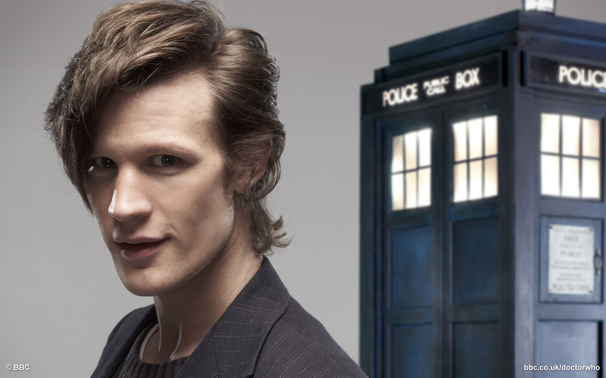

Portrayed by Matt Smith
|  |
Although Steven Moffat expected to pick a middle-aged actor for the new Doctor,[12] Smith was aged 26 when cast. This made him the youngest actor to portray the Doctor, three years younger than Peter Davison was at the time he began his role as the Fifth Doctor. |